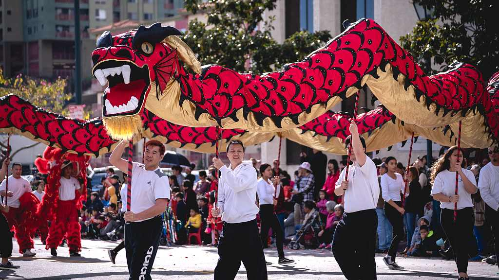

The Golden Dragon Parade
The Golden Dragon Parade is an annual parade to show or celebrate

Asian Pacific American Heritage Month Celebration
This is a Music, Dance, Culture & Community, Fairs, film & Family event in which tributes are paid to the generations of Asian and Pacific Islanders who have enriched America's history.
DCA celebrates Asian Pacific American Heritage Month with our annual Calendar and Cultural Guide presenting virtual events through May and beyond that honor LA’s Asian Pacific American residents, visitors, artists, and communities.
This year’s edition features cover art by Maria Kane (picture here) as well as dozens of art works by contemporary artists throughout the publication